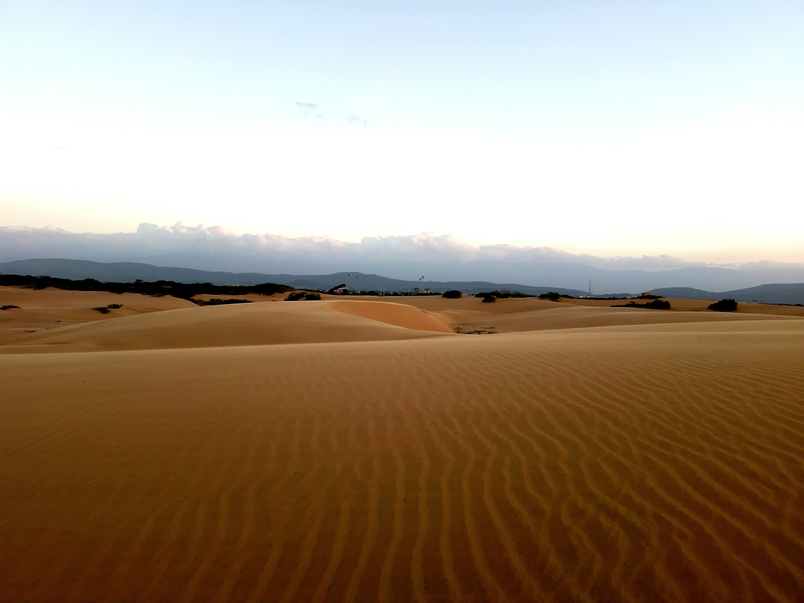

VENEZUELA'S DESERTS
In a country celebrated for its rainforests, mountains, and Caribbean coastlines, Venezuela harbors one of its most surprising natural secrets — a genuine coastal desert of wind-sculpted sand dunes rising just steps from the Caribbean Sea. It is a landscape so unexpected and so dramatic that first-time visitors are often rendered speechless, unable to reconcile the vision of vast golden dunes with the turquoise water glittering just beyond their crests.

The Médanos de Coro National Park in Falcón state is Venezuela's most extraordinary desert landscape and one of the most unusual natural environments in all of South America — a field of active coastal sand dunes that rise up to 40 meters in height, constantly reshaped by the powerful trade winds that blow in from the Caribbean Sea. Declared a national park in 1974, the Médanos de Coro cover an area of approximately 91,280 hectares on the isthmus connecting the Paraguaná Peninsula to the Venezuelan mainland, stretching along the coast near the UNESCO World Heritage city of Coro. The dunes are in constant, visible motion — walk the same path in the morning and again in the afternoon and you will find the landscape has shifted around you, the wind carving new ridgelines and erasing old ones with relentless, hypnotic energy. The contrast between the desert environment and its surroundings is one of the most visually arresting experiences Venezuela offers. Standing atop a dune crest, you can look in one direction and see an ocean of rolling golden sand extending toward the horizon, and in the other direction see the Caribbean Sea glittering in the midday sun — a juxtaposition so unlikely that it feels almost impossible. The best time to visit is in the early morning or late afternoon, when the angle of the sun casts long shadows across the dune faces and the temperature is manageable — midday heat in the Médanos can be genuinely extreme. Sand boarding down the steeper dune faces is a popular activity for visitors, and local guides based in nearby Coro offer tours that combine a visit to the dunes with exploration of the colonial city center, making it possible to experience UNESCO heritage architecture and an active coastal desert in a single remarkable day. The Médanos de Coro also support a surprising variety of desert-adapted wildlife including the Venezuelan troupial, various lizard species, and the hardy xerophytic vegetation that clings to the dune margins with remarkable tenacity. It is a place that defies every expectation of what Venezuela is supposed to look like — and that is precisely what makes it so unforgettable.